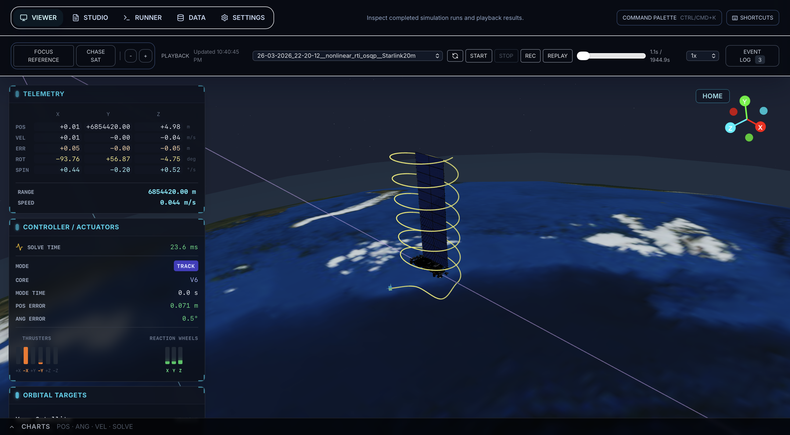
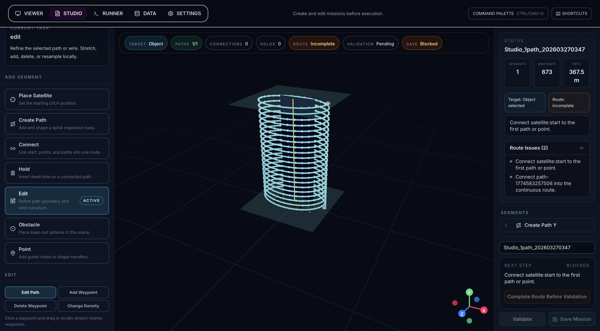

02 / Controls · Simulation
Taking satellite inspection into 3D.
A satellite-control research project spanning thruster-driven translation, reaction-wheel attitude control, and 3D inspection mission design.

The challenge
Extend the inspection idea from a planar air-bearing testbed into six-degree-of-freedom motion, with thruster and reaction-wheel control studies. In 3D, mission geometry, position control, and attitude control must work together.
The public showcase uses a Starlink model as an inspection target. The project focuses on stationary target scenarios and local simulation.
What I built
A browser-based Mission Studio lets me place an inspector, create spiral paths, connect segments, add holds, and validate routes before running them through the dynamics and controller stack.
- Simulation playback with trajectory, solve-time, and actuator telemetry.
- Six MPC controller profiles covering hybrid, linearized, and nonlinear approaches.
- A 10 × 10 sweep over control interval and prediction horizon to compare and tune controllers.
- A shared workflow from mission authoring to simulation artifacts and playback.
What it demonstrates
The project connects controller research with tools for designing and inspecting missions. It makes it possible to compare controller behavior on the same mission and inspect the trade-offs in the resulting telemetry.
This is a research and demonstration environment. It is not flight software, and the stationary-target showcase does not establish performance for rendezvous with moving spacecraft.
Explore the work
Source code, screenshots, and local setup ↗
The repository includes architecture notes, controller mathematics, sample missions, and benchmarking workflows.
